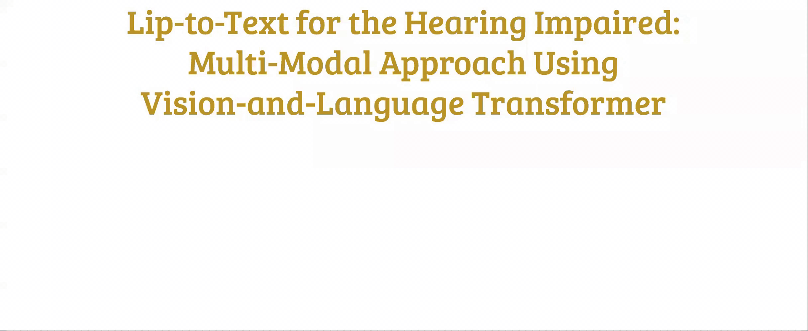
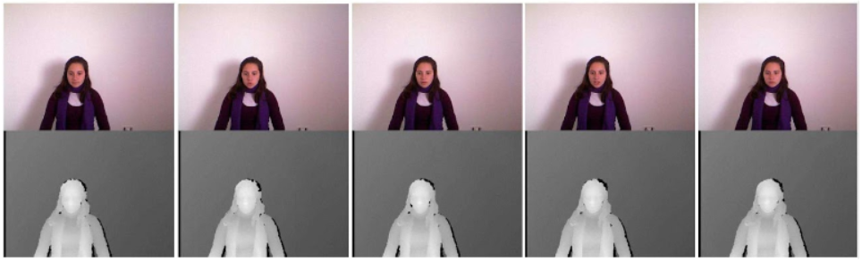

Project Name
Lip-Speech to Text for the Hearing Impaired: Multi-Modal Approach Using Vision-and-Language Transformer
Keywords
Hearing Impaired, Assistive Technology, Lip Reading, Multi-modal Approach, Vision-and-Language Transformer
Abstract
One basic day-to-day activity that is posing real challenges to the hearing impaired is interpersonal communication. In communities without knowledge of sign language, the hearing impaired mainly rely on lip reading, which becomes really impractical whenever multi-tasking is needed. Consequently, we propose a visual-linguistic speech recognition system that can automatically provide the hearing impaired with the text that is being communicated to them. We deploy a minimal vision-and-language-transformer (ViLT) in order to cut down on system computational complexity, thus making sure that the system is better suited for the real-time application. We fine-tune the ViLT model on the MIRACL-VC1 dataset and then evaluate its performance with an encoder-decoder based architecture as the baseline.
Motivation
According to the World Health Organization, more than 1.5 billion people around the world [1] and 25% of people over 60 years old [2] are living their lives with some sort of hearing loss. As aresult of such impairment, effective communication can be a real problem faced by the hearing impaired. Although communication through sign language can be efficient, its use is usually restricted to deaf signing communities [3]. Consequently, people with hearing disabilities usually heavily rely on lip reading on a daily basis [3]. However, taking a classroom environment as one of many examples, the hearing impaired would have to closely focus on lip reading while still having to carry out other tasks like notetaking [4]. Owing to such impracticality, a tool that is able to help the hearing impaired by automatically reading lips for them and providing them with the spoken words in text can be really beneficial. With the availability of more than one input modality which such a tool can rely on to provide the output text, it only makes sense that a multi-modal approach to lip reading will boost the overall system performance. In addition, since this automatic lip-to-text conversion needs to be efficiently performed in real-time to be of any real use, the less computationally expensive a model is, the better suited it becomes for such a time-sensitive application.
In this paper, we propose using the Vision-and-Language transformer, a minimal vision-and-language pre-training model [5], in a visual-linguistic speech recognition system performing multimodal lip reading for the hearing impaired. It is worth noting that we are focusing on evaluating the model performance through training and testing it on a publicly available dataset. We are not concerned with how the input data is obtained or output is displayed in real-time.
The following GIF summarizes our motivation for this project.

Literature Review
Traditional Lip Reading [6]: The following image summarizes the four main steps of traditional lip reading:
- Lip Detection and Extraction: using methods like color information-based or face structure-based ones.
- Feature Extraction: using pixel-based appraches, shape-based approaches, or mixed approaches.
- Feature Transformation: using methods like Principal Component Analysis (PCA) or Linear Discriminant Analysis (LDA).
- Classification: using models like a Time-Delay Neural Network (TDNN), a Support Vector Machine (SVM), or a Hidden Markov Model (HMM).

Deep Lip Reading [6]: The following image summarizes the three main steps of deep lip reading:
- Lip Detection and Extraction: using the previously mentioned traditional ways of region extraction or pre-trained models that can detect the face and its landmarks.
- Front-End Deep Neural Network: like convolutional neural networks (CNN) with their different configurations, or other networks like feed-forward neural network (FNN) and the autoencoder.
- Back-End Neural Network: like recurrent neural networks with their different versions (bi-directional long short-term memory (Bi-LSTM) network or bi-directional gated recurrent unit (Bi-GRU)), or other networks like temporal convolutional network (TCN) and the attention-based transformers.

Multi-Modal Lip Reading: Different modalities provide us with not only redundant information that can help us more confidently arrive at conclusions, but more importantly complementary information that we would not have gained if we were relying on a single modality. Consequently, recent research in lip reading has been heavily focused on adopting multi-modal approaches, like in [7] [8] [9] [10] and [11]. In such an approach, different modes of input are processed and exploited to boost the overall system performance [11].
Targeted Gap
To the best of the authors’ knowledge, all the approaches developed and adopted in the literature heavily rely on computationally complex feature extraction from the visual input, which definitely affects the efficiency and speed of the overall system. Therefore, this is where the innovativeness of our proposed approach actually comes in.
Proposed Method
Dataset: In this project, MIRACL-VC1 [12] will be used as the dataset that is recorded by Microsoft Kinect of 15 people each saying 10 words and 10 phrases 10 times, so there are 3,000 instances in this dataset. In this dataset, each instance is a string of 640×480 pixel color and depth images. The following figure shows a image of an instance as an example. We will use only the color images and discard the depth part.
The words and phrases in the dataset are listed in the following figure.

Model: Our goal is to cut down on the computational complexity of the step of feature extraction from the visual imput to achieve a reduced inference time. Consequently, we deploy the novel model proposed by [5] called Vision-and-Lanugage Transformer (ViLT), which does not require convolution or region surpervision. Inspired by the idea of patch projection embedding introduced by [13] for Vision Transformer (ViT) on image classification task, [5] use a 32 x 32 patch projection as visual embedder and combine it with the word embedding to pass to the transformer encoder. The detailed architecture of ViLT is demonstrated in the following figure.

ViLT was pre-trained on four datasets: Microsoft COCO [14], Visual Genome [15], SBU Captions [16], and Google Conceptual Captions [17], on two tasks, image text matching and masked language modeling.
Experiment Design: We will use MIRACL-VC1 to fine-tune the pre-trained ViLT and compare performance with a traditional encoder decoder based architecture baseline (CNN encoder with LSTM decoder). For each word or phrase per speaker, eight instances will be used for fine-tuning, and two will be used for testing. If time permits, we would also record some new instances to test how our proposed model performs with new speakers.
Click Here to see our full proposal presentation slides!